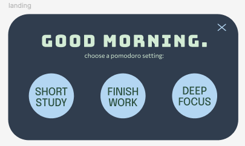
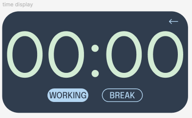

Project Overview:
The Pomodoro Widget is a minimalist, desktop timer built as an Electron app with React and Vite. Inspired by the Pomodoro technique, it helps users manage focused work sessions and breaks with a distraction-free floating widget. Designed to stay on top, blend into the desktop, and look aesthetically cohesive, the widget is lightweight and fully cross-platform.
Project Objectives:
My goal was to build a practical tool that I could actually use every day while studying or coding. I wanted it to feel less like a separate window and more like part of my workspace. It had to be small, non-intrusive, yet visually appealing. This project also challenged me to combine front-end React development with Electron, handle window behavior, and explore desktop app distribution.
Tech Stack:
React + Vite
React provided the perfect foundation for building an interactive and state-driven timer, while Vite made development lightning-fast with hot reloading. React’s component-based architecture let me build reusable parts like the landing screen, timer display, and buttons. I chose React over vanilla JS to keep the code organized, testable, and scalable.
Electron
I used Electron to wrap the React app into a desktop widget. Electron let me control window properties like transparency, always-on-top behavior, and custom sizing. I also built a preload script to safely bridge front-end JavaScript with native Electron APIs, allowing the exit button to close the widget.
CSS
Custom CSS made it possible to create a clean, modern look that fits any desktop background. I avoided large frameworks to keep the app lightweight, and used CSS for styling buttons, typography, and transitions. Special care was taken to hide scrollbars and remove window whitespace so the widget feels like it's seamlessly floating.
Prototype Created:
 Challenges and Solutions:
One major challenge was getting the widget to appear truly frameless and transparent on all platforms
while still remaining interactive. Electron’s transparent windows sometimes conflict with system themes
or GPU acceleration, so I had to carefully test settings like transparent, frame,
and alwaysOnTop.
Another challenge was securely connecting the front end to Electron's main process. By writing a preload script
and exposing only a minimal API with contextBridge, I kept the renderer process isolated for safety.
Finally, keeping the timer responsive and visually consistent across resolutions meant tweaking CSS dimensions
and using flexbox for layout.
Final Product:
The final widget is a polished, fully functional Pomodoro timer that floats on the desktop. It lets users choose between study modes, start/pause sessions, and easily exit when finished. Lightweight and elegant, it serves as a daily productivity companion without feeling like another app window.
What I Might Do Differently:
In the future, I'd like to add an option to change the timer sounds. I'd also explore saving session history locally, so users can track productivity over time, and maybe add subtle animations to mark breaks.